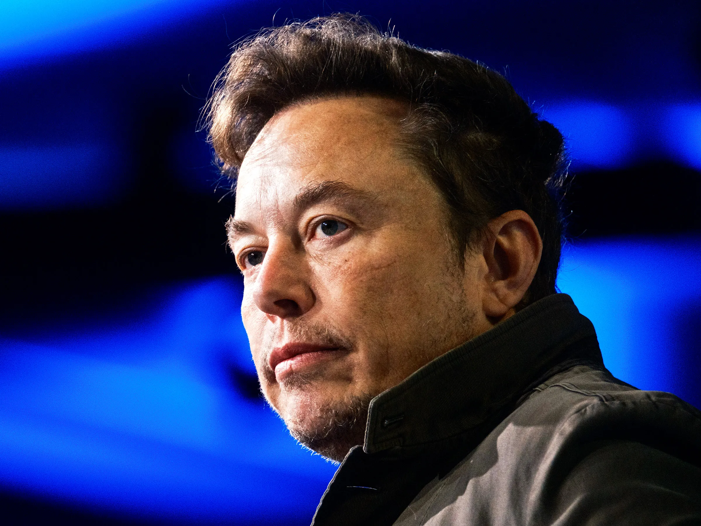

Good Morning Readers!
Elon Musk says X will strip ability to block accounts
Date : 18-9-23
An
image with a text-top alignment.media company X, formerly known as Twitter, will remove a protective feature that lets users block other accounts, owner Elon Musk said on Friday in another controversial move for the company he bought last year.
The block function on X allows a user to restrict specific accounts from contacting them, seeing their posts or following them.
“Block is going to be deleted as a ‘feature’, except for DMs,” Musk said in a post on the platform, referring to direct messages.He said X would retain the mute function, which screens a user from seeing specified accounts but, unlike blocking, does not alert the other account to the action.
The billionaire owner has described himself as a free speech absolutist, but some critics have said his approach is irresponsible.
Researchers have found an increase in hate speech and antisemitic content on the platform since he took over, and some governments have accused the company of not doing enough to moderate its content.
Removing or limiting the block feature might bring X into conflict with guidelines incorporated by Apple’s App Store and Alphabet’s Google Play.
Apple says apps with user-generated content must have the ability to block abusive users. Google Play Store says apps must provide an in-app system for blocking user-generated content and users.
X, Google and Apple did not immediately reply to requests for comment. Responding to a post from anti-bullying activist Monica Lewinsky urging X to keep the “critical tool to keep people safe online”, Chief Executive Linda Yaccarino defended Musk’s move.
Success Story of Elon Musk: The Futuristic Entrepreneur
Date : 22-9-19

Tesla Motors is finally ready to make sure it builds its $ 5 billion Giga factory in Nevada, setting up a five-nation competition for what is considered to be the world’s largest battery plant. But the scope of Tesla’s plans extends far beyond state borders.
Elon Musk plant a 10 million sq foot factory that may double the world’s lithium-ion battery capacity by the end of the year.
Tesla started in the Giga factory in 2017 and was capable of supplying 35 gigabytes hours of battery for an estimation of 5 lack electric vehicles, which Tesla expected to build up at the end of the year 2020.
The locals obviously will get benefited that includes construction jobs and economic impacts.
Tesla CEO Elon musk requires about 6500 employees to run this massive facility. The Giga factor could help in the development of the economic state of the country. The Tesla factory expected to reduce the emissions from the high-performance U.S. lithium-ion battery production units. This may lead to a reduction in the environmental pollution that are caused by other battery manufacturers in the world.
Elon Musk’s motive is to decrease environmental pollution by supplying electric vehicles all over the world.
Click Here to read full blogs page
Imran Khan The Inspiration
 In the ups and downs of life, some forces of life keep us moving, in the darkest hour of every night, there is always a candle, burning midnight oils to enlighten the darkness and prepare to welcome the glim and glow of morning, In fall, there is a nightingale who sings euphonious songs along with the mesmerizing melodious sound of falling leaves and keep on reminding the life around him that this season is a preparation for hosting new life. These are the answers to the questions people often ask me about my love, dedication, and support for Imran khan and faith in his abilities as a leader.
My devotion is a two-layered phenomenon; spiritual and political, based upon the different arguments and their relation to the different aspects of life. It may not be the case with everyone but those who are spiritually minded and has an idealistically realistic approach towards life and who want their names to be written on the golden pages of history and be remembered after their death as those to whom humanity could look up in the age of turmoil and disaster.
First among the two layers is the spiritual one which is way stronger and bonded with the soul. Imran Khan has always been a wanderer of spirituality which, as he has mentioned in his book, has empowered him to tackle down the challenges of life and provided him with a new and different way of looking at life. I feel a spiritual connection with him because in every spell of depression, in each attack of anxiety, and in the nights of despair, I found his words and life a torch of light and beacon of hope. The way he made it back to the cricket and touched the highest skies after the worst performance in his very debut test match was always a magnet of success in my every failure. His decision to be a fast bowler even after the negative remarks and judgments of both public and experts and then proving them wrong with his unshakable determination and unbreakable confidence, was there for me to look at each time while doing something that everyone told me I would not be able to make it. The epitome of service to humanity, the class of devotedness, a medical and economical miracle, the strongest sign of common lot's faith in Imran khan, a cenotaph of his mother and a memorial of love Shaukat Khanum Cancer hospital, remained unrivaled among all the charity works done so far in the country. This work of Imran khan is more than enough to draw inspiration and motivation for a life that can be spent with a purpose and end with something meaningful.
In the ups and downs of life, some forces of life keep us moving, in the darkest hour of every night, there is always a candle, burning midnight oils to enlighten the darkness and prepare to welcome the glim and glow of morning, In fall, there is a nightingale who sings euphonious songs along with the mesmerizing melodious sound of falling leaves and keep on reminding the life around him that this season is a preparation for hosting new life. These are the answers to the questions people often ask me about my love, dedication, and support for Imran khan and faith in his abilities as a leader.
My devotion is a two-layered phenomenon; spiritual and political, based upon the different arguments and their relation to the different aspects of life. It may not be the case with everyone but those who are spiritually minded and has an idealistically realistic approach towards life and who want their names to be written on the golden pages of history and be remembered after their death as those to whom humanity could look up in the age of turmoil and disaster.
First among the two layers is the spiritual one which is way stronger and bonded with the soul. Imran Khan has always been a wanderer of spirituality which, as he has mentioned in his book, has empowered him to tackle down the challenges of life and provided him with a new and different way of looking at life. I feel a spiritual connection with him because in every spell of depression, in each attack of anxiety, and in the nights of despair, I found his words and life a torch of light and beacon of hope. The way he made it back to the cricket and touched the highest skies after the worst performance in his very debut test match was always a magnet of success in my every failure. His decision to be a fast bowler even after the negative remarks and judgments of both public and experts and then proving them wrong with his unshakable determination and unbreakable confidence, was there for me to look at each time while doing something that everyone told me I would not be able to make it. The epitome of service to humanity, the class of devotedness, a medical and economical miracle, the strongest sign of common lot's faith in Imran khan, a cenotaph of his mother and a memorial of love Shaukat Khanum Cancer hospital, remained unrivaled among all the charity works done so far in the country. This work of Imran khan is more than enough to draw inspiration and motivation for a life that can be spent with a purpose and end with something meaningful.